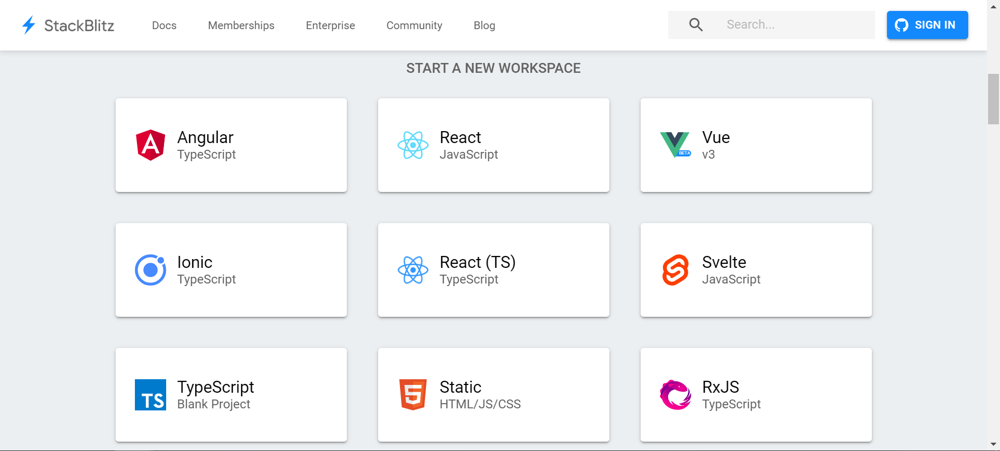

DAY22-如何描述問題與問問題
DAY22-如何描述問題與問問題
遇到問題了怎麼辦
遇到問題可以說是工程師的日常，天天都會遇到一大堆問題。也因為有問題，工程師才有存在的價值，沒有問題的話就不需要工程師了。
可是光是前端的問題就包羅萬象、千奇百怪。不可能知道所有的問題，幾乎大部分的問題都是我們為知不知道的問題。遇到不知道的問題的時候，有以下的建議:
- 想辦法自行解決
- 如果無法自行解決就向人求助
想辦法自行解決:
大部分遇到的問題，其他人應該也遇到過。錯誤發生的時候，基本上仔細看一下console的錯誤訊息，都會描述發生了什麼錯誤或是錯誤的代碼等等。只要把錯誤訊息或代碼拿去google搜尋就可以搜尋到一籮筐的解法。
如果google不太到的話，也可以去專業的網站再搜尋一次
- Stack Overflow : 最大的程式設計領域的問答網站，上面有很多問題，也有很多高手在上面熱心的回答。曾經有個笑話說如果Stack Overflow網站掛了，那麼工程師就會沒有產能了，因為大家都是看Stack Overflow在寫程式的。裡面雖然都是英文，但是基本上用字都不難，甚至只要看懂關鍵字，幾乎就可以了解在做什麼
- 知乎 : 中文最大的問答網站，類似雅虎奇摩知識+。上面也有各種千奇百怪的問題，但是每個千奇百怪的問題都會有各領域的大神在上面認真回答，幾乎以論文的標準引經據典地在回答。如果不想看英文，覺得頭很痛，可以在這查詢問題
向人求助:
如果找遍各大網站還是找不到解決方法，或是問題真的太冷門了，那麼只好向人求救了。
但是向人求救之前，就不是只有單純複製錯誤訊息那麼簡單。必須先搞懂問題在哪裡和要如何向人描述問題
如何描述問題
- 遇到什麼問題
- 你試著用什麼辦法去解決問題
- 雖然失敗了，但是你覺得原因是什麼
- 將問題還原列出來
例如:
我遇到javascript promise的問題，我想要用promise跟API溝通取得資料，但是不知道為什麼一直取不到資料。
我在stackoverflow上面查過，有可能是我使用參數的方法不太對，導致沒有一個方法可以接收資料。
但是我不知道該怎麼做會比較對
這是我的程式碼連結這樣就比較清楚描述你發生甚麼問題，然後你試過了什麼方法，不是只想當個伸手牌。但只是一直沒有辦法成功，所以要求助於大家。
另外還有附上你的程式碼，讓想幫助你的人可以迅速看到問題，而不用通靈想像你的錯誤
如何還原問題
還原問題不只是截圖，截圖有時候只能看到問題發生了，但是發生的問題大多都要憑直覺和想像。
最好的辦法是將發生問題的程式碼寫出來，讓別人看。
因此推薦以下兩個網站
StackBlitz

一個強大的網站，可以馬上套用各種框架，不用煩惱環境的問題。
如果有使用任何框架，推薦使用
CodePen

相較於StackBlitz有豐富的框架可以選擇，CodePen就比較陽春許多。不過功能比較單純正是其優點。
很適合拿來描述樣式的問題或是無關框架的Javascript問題。可以很快再上面還原問題